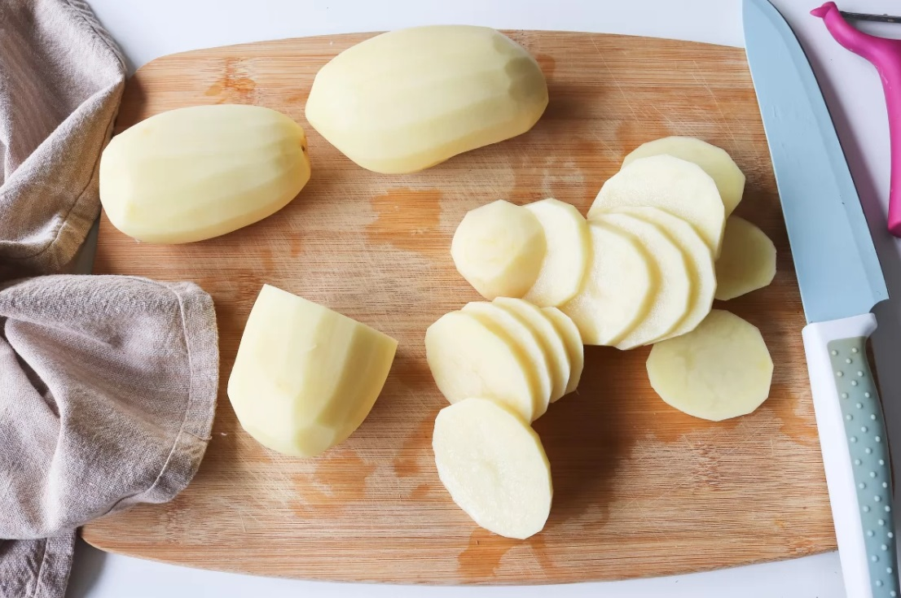
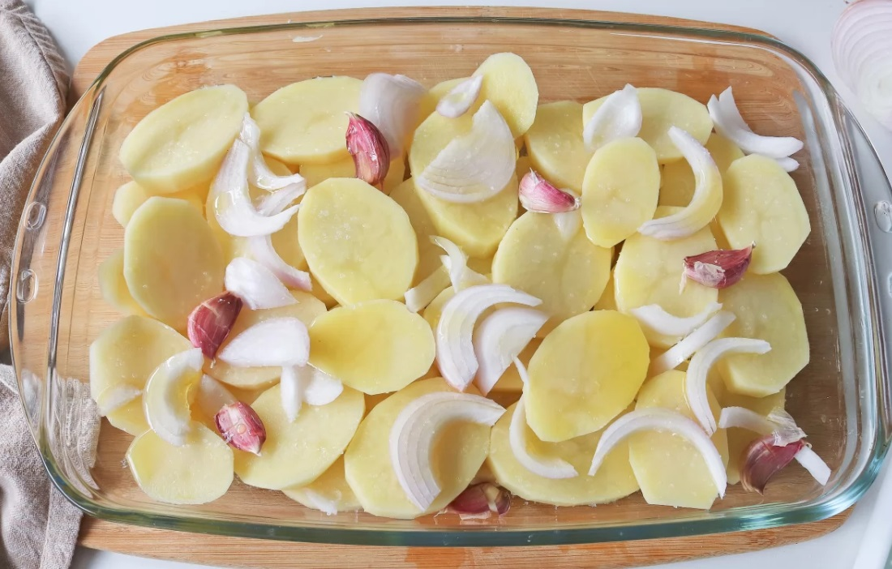
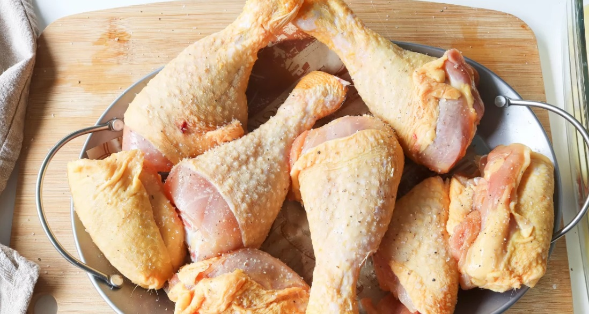
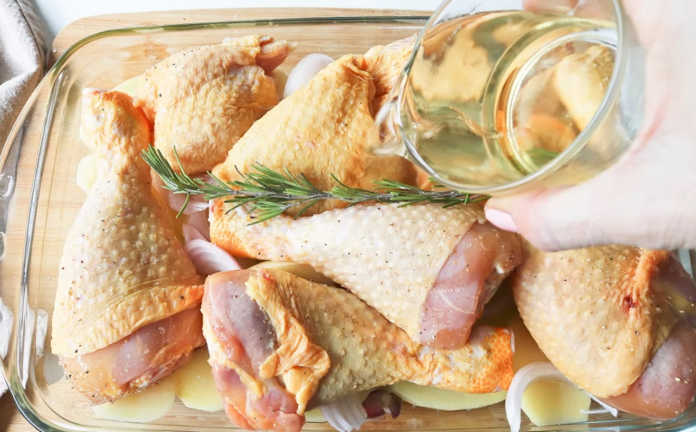
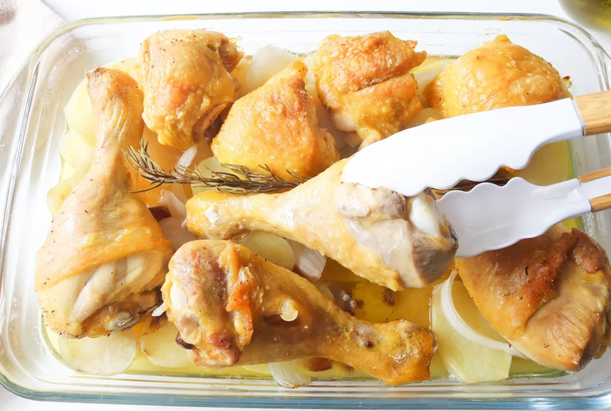
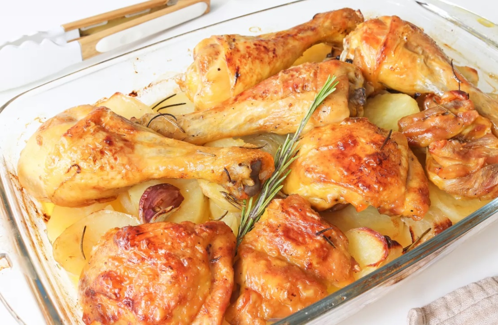

Receta de Pollo al horno con patatas a la panadera
 Volver a la página principal
Volver a la página principal
Pollo al horno con patatas a la panadera
Ingredientes
Paso a paso
Resultado final
Ingredientes
- 4 Patatas medianas
- Sal
- 30 ml de Acedite de oliva
- Pimienta negra molida
- Media cebolla
- 6 dientes de ajo
- 1,2 kg de pollo aproximadamente
- 200 ml de vino blanco
- 1 rama de romero
 Volver al inico
Volver al inico
Paso a paso
1º Paso: Cortar ingredientes
4 patatas medianas
30 ml de Aceite de Oliva
Media cebolla
6 dientes de ajo
Sal
Pimienta molida
-Empezaremos con la base de este plato. Para ello pelamos y lavamos 4 patatas medianas.
A continuación, las cortamos en rodajas de 1 cm de grosor aproximadamente.

-Preparamos una bandeja de horno y la untamos con un poco de aceite de oliva virgen extra, unos 30 ml.
Ponemos las patatas, las salpimentamos y repartimos sobre ellas media cebolla cortada en juliana y 6 dientes de ajo a los que habremos hecho un corte por la mitad.

2º Paso: Preparar el pollo
1,2 kg de pollo
200 ml de vino blanco
1 rama de romero
Sal
Pimienta molida
-Salpimentamos el pollo. En nuestro caso, hemos elegido 4 muslos de pollo y 4 contramuslos.

-Ponemos las piezas de pollo encima de la cama de patatas con cebolla y ajo.
Vertemos sobre el pollo 200 ml de vino blanco y para aromatizar el asado, añadimos 1 rama de romero.

3º Paso: Hornear
-Llevamos la bandeja al horno precalentado a 200 ºC, con calor arriba y abajo, y horneamos durante 45 minutos.
Pasado este tiempo, sacamos el pollo del horno y le damos la vuelta para que la piel quede tostada por todas partes.
Podemos aprovechar para regar el pollo y las patatas con el jugo que desprende el asado.

Volver al inico
Resultado Final

Volver al inico